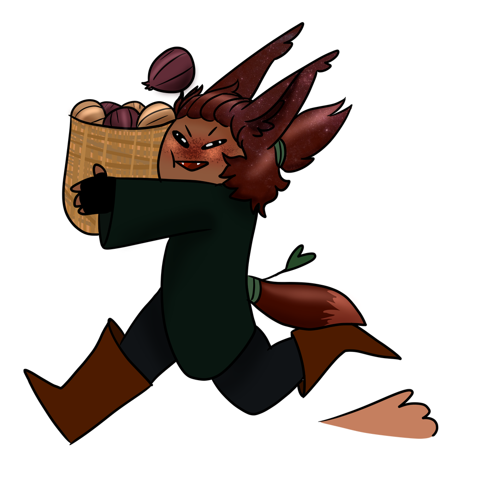
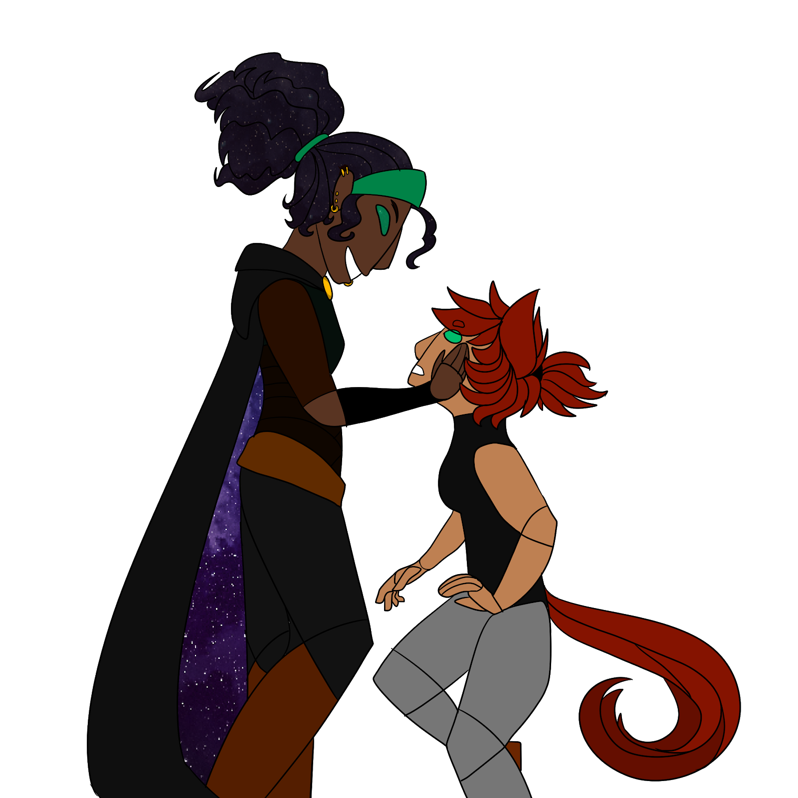

My Art Gallery
This is my main hobby so I have done away with the hobbies tab because I dont do much otherwise, so please enjoy the millions of years of practice all contained in one section of this site :)

dont mind that this is totally a furry, its one of the best things I have ever drawn

you may have seen this guy on Baileys website! This is our oc onion Bailey did the sketch I lined and we colored it together! He is the son of two hero's who star in my comic

Lillian and Percy, lesbian moms who are the heros of my first story before they have onion (through magic). Lillian is the leader if a roving bandit hoarde and Percy is the first born of 8 children (all boys except her), she has a simple farm life, helping harvests and protecting her family from the monsters

These are the murder boys Nolan Gabriel and August, Nolan is a canniable who hates Gabriel who is an immortal lich who used to be royalty, August doesnt actually murder anyone they just keep Nolan and Gabe from tearing up the city since they cant really kill eachother